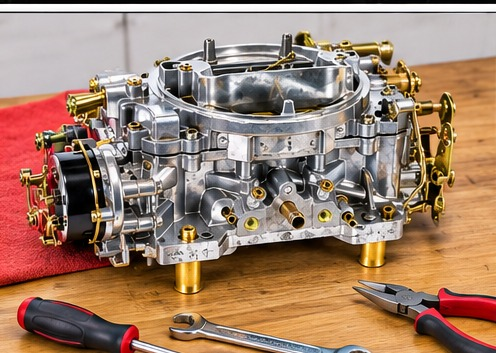
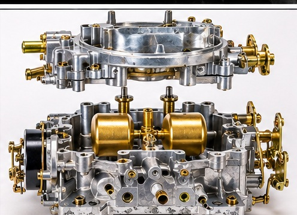
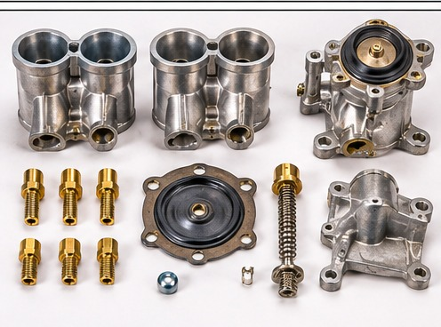
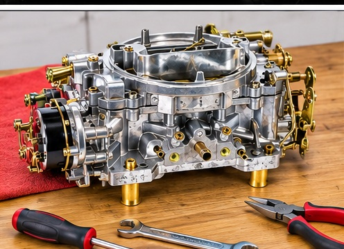

Learn
Carburetor Resources
Explore basic service topics and information to help you understand your setup.
View carburetor resources →Helpful carburetor information, practical resources, and downloadable guides for people who love keeping classic vehicles on the road.
Browse Free DownloadsExplore Carburetor ResourcesWhether you're learning about a carburetor, planning maintenance, or looking for a reference guide, start with the resources below.

Explore basic service topics and information to help you understand your setup.
View carburetor resources →
Get the available Edelbrock 1406 reference PDFs in one convenient place.
Get the guides →
Have a question or a suggestion for a future guide? Send a message.
Contact us →ChevyParts101 is being built as a helpful starting point for carburetor information, downloadable references, and classic vehicle resources.
About ChevyParts101